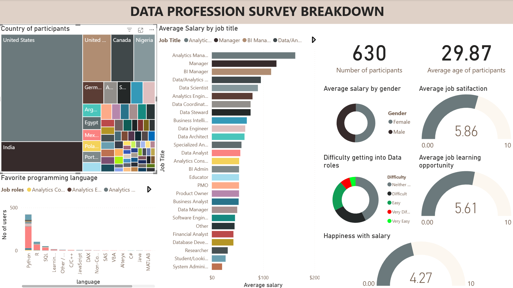
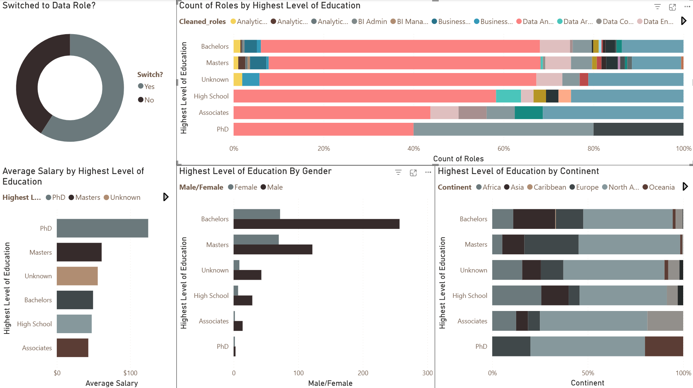

Data Visualizations
Turning data into meaningful insights through effective visualization and storytelling.
Global Data Professionals Survey Analysis Dashboard
An interactive Power BI dashboard analyzing salary trends, job satisfaction, career progression, learning opportunities, and technology usage among data professionals across multiple countries.
+ Global Data Professionals Survey Analysis Dashboard +
Overview
The demand for data professionals has grown significantly over the last decade, creating new career opportunities across industries worldwide. However, questions remain regarding salary expectations, job satisfaction, preferred technologies, and career development opportunities within the field.
This project analyzes survey responses collected from data professionals across multiple countries. The objective was to transform raw survey data into an interactive Power BI dashboard capable of providing insights into compensation, job satisfaction, learning opportunities, and technology adoption within the data industry.
Data Preparation
Key Analysis Questions
- How do salaries differ across data-related professions?
- Which tools are most commonly used by data professionals?
- How satisfied are professionals with their careers?
- Which countries offer the strongest compensation opportunities?
- What learning and career development opportunities exist across roles?
Analysis Insights from EDA


Dashboard Insights
- Data Scientists and Data Engineers generally reported higher salary levels than many other data-related roles.
- Python, SQL, and Power BI emerged as some of the most widely used tools across respondents.
- Job satisfaction varied considerably between roles and regions.
- Professionals with stronger learning opportunities tended to report higher overall career satisfaction.
- Significant salary differences were observed across countries, reflecting varying market maturity and demand for data skills.
Conclusion
The dashboard demonstrates how workforce survey data can be transformed into actionable insights for employers, job seekers, educators, and industry stakeholders. Through interactive visualizations and KPI tracking, the project provides a comprehensive view of compensation trends, job satisfaction, technology adoption, and career development within the global data profession.
The dashboard includes salary analysis, job satisfaction metrics, tool adoption trends, geographic comparisons, and career development insights using calculated measures, KPIs, slicers, and drill-through functionality.
The final dashboard enables stakeholders to explore workforce trends dynamically and gain deeper insights into the evolving data profession.
Electric Vehicle Adoption Analysis
An exploratory analysis of global video game sales data to identify the genres, platforms, publishers, and regional markets that have historically driven the industry's commercial success.
+ Electric Vehicle Adoption Analysis +
Overview
Governments and automotive manufacturers worldwide are investing billions of dollars in the transition to electric vehicles (EVs). Despite this rapid growth, EV adoption rates vary significantly between countries, raising important questions about which economic, policy, and infrastructure factors truly drive consumer adoption.
This project investigates the key determinants of electric vehicle adoption across multiple countries over time using panel data analysis. The objective was to identify which factors have the strongest influence on EV market share and provide evidence-based recommendations for policymakers, investors, and automotive manufacturers.
Data Preparation
Prior to analysis, extensive preprocessing was conducted to ensure the reliability of the results:
Key Analysis Questions
- What factors most strongly influence EV adoption across countries?
- How important is charging infrastructure in accelerating adoption?
- Do wealthier countries adopt EVs more rapidly?
- How effective are policy and regulatory initiatives in increasing market share?
- Which factors remain significant after controlling for country-specific characteristics?
Analysis Insights from EDA


Business Recommendations
- Governments seeking to accelerate EV adoption should prioritize investment in public charging infrastructure.
- Automotive manufacturers should focus expansion efforts on regions with strong infrastructure growth and rising income levels.
- Policy incentives should be paired with infrastructure development rather than implemented in isolation.
- Investors evaluating EV-related opportunities should monitor infrastructure deployment trends alongside vehicle sales data.
- Future EV adoption forecasts should incorporate country-specific characteristics rather than relying solely on global averages.
Conclusion
The analysis found that consumer awareness and charging infrastructure were the most important drivers of EV adoption across countries. Google Trends search activity emerged as the strongest predictor of EV market share, suggesting that public interest and awareness play a critical role in accelerating adoption. Charging infrastructure also had a significant positive impact, reinforcing the importance of network availability and convenience for consumers. In contrast, variables often assumed to influence EV adoption—including GDP growth, gasoline prices, and residential electricity prices—did not remain statistically significant after controlling for country-specific and time-specific effects. These findings highlight that increasing consumer awareness and expanding charging infrastructure may be more effective strategies for accelerating EV adoption than relying on broader economic growth or energy price changes alone.
This project involved data cleaning, exploratory data analysis, panel data preparation, multicollinearity testing, model selection, and econometric analysis using Two-Way Fixed Effects Panel Regression.
Statistical techniques including VIF analysis, model diagnostics, hypothesis testing, and panel regression were used to identify the factors that significantly influence EV market share across countries over time.
The complete workflow, including code, visualizations, and findings, is documented in the accompanying Jupyter Notebook.
British Airways Customer Booking Prediction
This project analyzes customer booking behavior for British Airways to identify the factors that influence booking completion and to develop predictive models capable of estimating the likelihood that a customer will finalize a booking.
+ British Airways Customer Booking Prediction +
Overview
Airlines invest heavily in marketing campaigns to attract potential customers to their booking platforms. However, not every visitor who begins the booking process ultimately completes a reservation.
The analysis combines exploratory data analysis, statistical testing, customer segmentation, and machine learning techniques to uncover actionable insights that can improve conversion rates and support more efficient marketing strategies.
Data Preparation
Several preprocessing steps were performed before analysis:
Key Analysis Questions
- Which customer characteristics influence booking completion?
- Which markets generate the highest conversion rates?
- How does booking lead time affect customer behavior?
- Can customer behavior be used to predict booking completion?
- How can marketing resources be allocated more efficiently?
Analysis Insights from EDA


This project involved data cleaning, exploratory data analysis, customer segmentation, and predictive modeling using Python.
The complete workflow, including code, visualizations, and findings, is documented in the accompanying Jupyter Notebook.